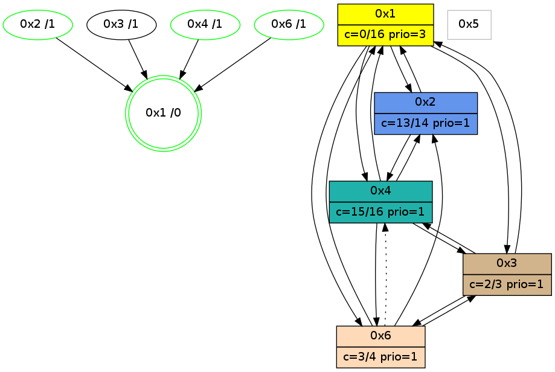

>> << IDX [start] -100 -25 -5 +0 +5 +25 [1160.08406997]
 Previous packets
----------------------------------------------------------------------
1155.061532 beacon01(adaf) #0 coord=01,02,05,03,04,06 cycle=944.0ms assoc
-- color-indic=0 64 6d 0a
1155.071494 beacon02(adaf) #0 coord=01,02,05,03,04,06 cycle=944.0ms assoc 64 3c f5
1155.081494 beacon05(adaf) #0 coord=01,02,05,03,04,06 cycle=944.0ms assoc 64 9a df
1155.091494 beacon03(adaf) #0 coord=01,02,05,03,04,06 cycle=944.0ms assoc 64 06 fb
1155.101494 beacon04(adaf) #0 coord=01,02,05,03,04,06 cycle=944.0ms assoc 64 a0 d1
1155.111494 beacon06(adaf) #0 coord=01,02,05,03,04,06 cycle=944.0ms assoc 64 d4 cd
1155.123186 [Hello(3): seq=950 sym=6,1,4 color=2 sysInfo=hasWarning,MaxColorIndicationCalled,ColoringModeIndicationCalled,MaxColorResponseCalled stat=6:0,0,0,0/1:15,15,5,1/4:14,10,1,1]
----------------------------------------------------------------------
1156.066038 beacon01(adaf) #0 coord=01,02,05,03,04,06 cycle=944.0ms assoc
-- color-indic=0 64 21 ba
1156.076002 beacon02(adaf) #0 coord=01,02,05,03,04,06 cycle=944.0ms assoc 64 70 45
1156.085999 beacon05(adaf) #0 coord=01,02,05,03,04,06 cycle=944.0ms assoc 64 d6 6f
1156.095999 beacon03(adaf) #0 coord=01,02,05,03,04,06 cycle=944.0ms assoc 64 4a 4b
1156.106000 beacon04(adaf) #0 coord=01,02,05,03,04,06 cycle=944.0ms assoc 64 ec 61
1156.116000 beacon06(adaf) #0 coord=01,02,05,03,04,06 cycle=944.0ms assoc 64 98 7d
1156.127726 [Hello(4): seq=952 sym=2,1,3,6 sysInfo=hasWarning,MaxColorIndicationCalled,ColoringModeIndicationCalled,MaxColorResponseCalled stat=2:1,3,2,0/1:1,11,8,0/3:4,0,0,0/6:0,0,0,0]
1156.130294 [Hello(1): seq=853 sym=2,4,6,3 color=0 sysInfo=hasWarning,MaxColorIndicationCalled,MaxColorResponseCalled,MaxColorRequestCalled,ColoringModeRequestCalled stat=2:10,3,0,0/4:0,0,1,0/6:9,2,5,0/3:4,0,3,0]
----------------------------------------------------------------------
1157.070547 beacon01(adaf) #0 coord=01,02,05,03,04,06 cycle=944.0ms assoc
-- color-indic=0 64 e5 d5
1157.080508 beacon02(adaf) #0 coord=01,02,05,03,04,06 cycle=944.0ms assoc 64 b4 2a
1157.090508 beacon05(adaf) #0 coord=01,02,05,03,04,06 cycle=944.0ms assoc 64 12 00
1157.100508 beacon03(adaf) #0 coord=01,02,05,03,04,06 cycle=944.0ms assoc 64 8e 24
1157.110509 beacon04(adaf) #0 coord=01,02,05,03,04,06 cycle=944.0ms assoc 64 28 0e
1157.120508 beacon06(adaf) #0 coord=01,02,05,03,04,06 cycle=944.0ms assoc 64 5c 12
1157.132206 [Hello(3): seq=951 sym=6,1,4 color=2 sysInfo=hasWarning,MaxColorIndicationCalled,ColoringModeIndicationCalled,MaxColorResponseCalled stat=6:0,0,0,0/1:0,15,5,1/4:14,10,1,1]
----------------------------------------------------------------------
1158.075060 beacon01(adaf) #0 coord=01,02,05,03,04,06 cycle=944.0ms assoc
-- color-indic=0 64 a8 d2
1158.085020 beacon02(adaf) #0 coord=01,02,05,03,04,06 cycle=944.0ms assoc 64 f9 2d
1158.095021 beacon05(adaf) #0 coord=01,02,05,03,04,06 cycle=944.0ms assoc 64 5f 07
1158.105022 beacon03(adaf) #0 coord=01,02,05,03,04,06 cycle=944.0ms assoc 64 c3 23
1158.115023 beacon04(adaf) #0 coord=01,02,05,03,04,06 cycle=944.0ms assoc 64 65 09
1158.125023 beacon06(adaf) #0 coord=01,02,05,03,04,06 cycle=944.0ms assoc 64 11 15
1158.136738 [Hello(4): seq=953 sym=2,1,3,6 sysInfo=hasWarning,MaxColorIndicationCalled,ColoringModeIndicationCalled,MaxColorResponseCalled stat=2:1,3,2,0/1:2,11,8,0/3:5,0,0,0/6:0,0,0,0]
1158.140690 [Hello(1): seq=854 sym=2,4,6,3 color=0 sysInfo=hasWarning,MaxColorIndicationCalled,MaxColorResponseCalled,MaxColorRequestCalled,ColoringModeRequestCalled stat=2:10,3,0,0/4:0,0,1,0/6:10,2,5,0/3:4,0,3,0]
1158.143828 [STC(1) #0.206 new-neigh,tree-change,inconsistent-stability,stable,to-color d=0]
----------------------------------------------------------------------
1159.079564 beacon01(adaf) #0 coord=01,02,05,03,04,06 cycle=944.0ms assoc
-- color-indic=0 64 6c bd
1159.089525 beacon02(adaf) #0 coord=01,02,05,03,04,06 cycle=944.0ms assoc 64 3d 42
1159.099525 beacon05(adaf) #0 coord=01,02,05,03,04,06 cycle=944.0ms assoc 64 9b 68
1159.109525 beacon03(adaf) #0 coord=01,02,05,03,04,06 cycle=944.0ms assoc 64 07 4c
1159.119525 beacon04(adaf) #0 coord=01,02,05,03,04,06 cycle=944.0ms assoc 64 a1 66
1159.141094 [STC(4)->1 #0.206 new-neigh,tree-change,inconsistent-stability,stable,to-color d=1]
1159.144879 [Hello(6): seq=867 sym=3,1,2 asym=4 color=3 sysInfo=hasWarning,MaxColorIndicationCalled,ColoringModeIndicationCalled,MaxColorResponseCalled stat=3:1,0,1,0/1:12,13,2,0/2:3,0,1,0/4:2,5,5,1]
1159.146817 [Hello(3): seq=952 sym=6,1,4 color=2 sysInfo=hasWarning,MaxColorIndicationCalled,ColoringModeIndicationCalled,MaxColorResponseCalled stat=6:0,0,0,0/1:1,15,6,1/4:15,10,1,1]
1159.148731 [STC(6)->1 #0.206 new-neigh,tree-change,inconsistent-stability,stable,to-color d=1]
1159.150625 [STC(3)->1 #0.206 new-neigh,tree-change,inconsistent-stability,to-color d=1]